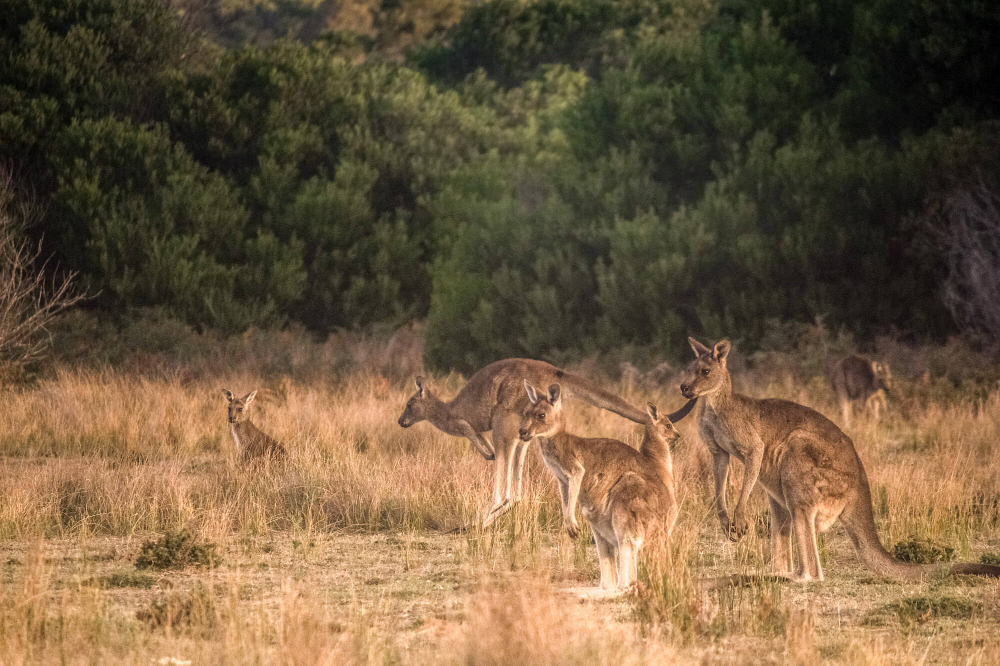
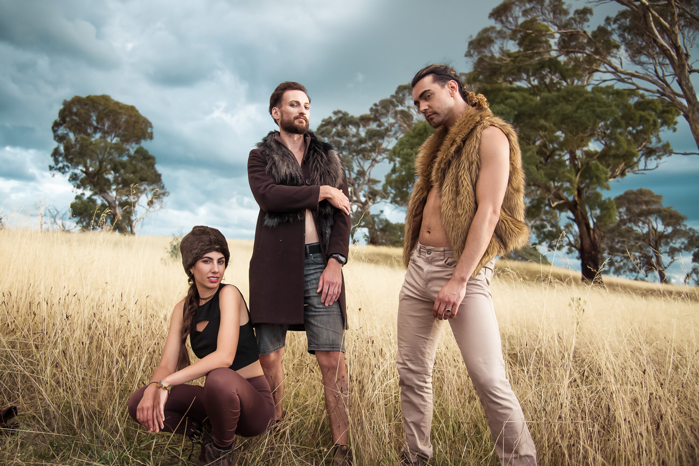
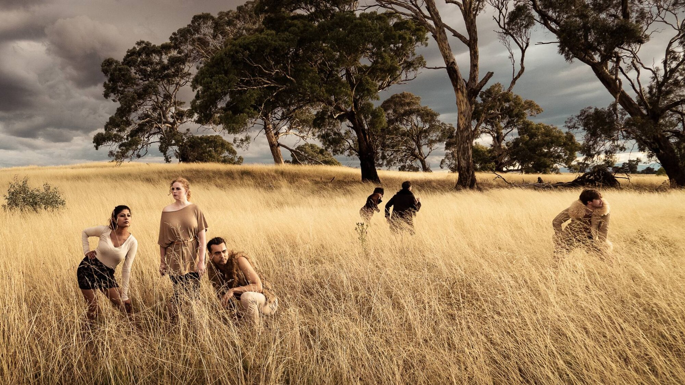
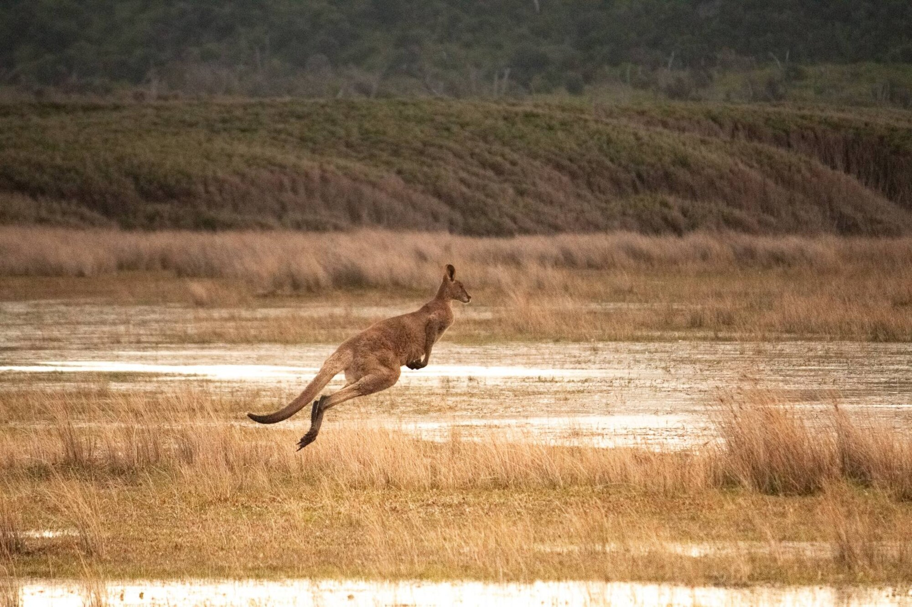
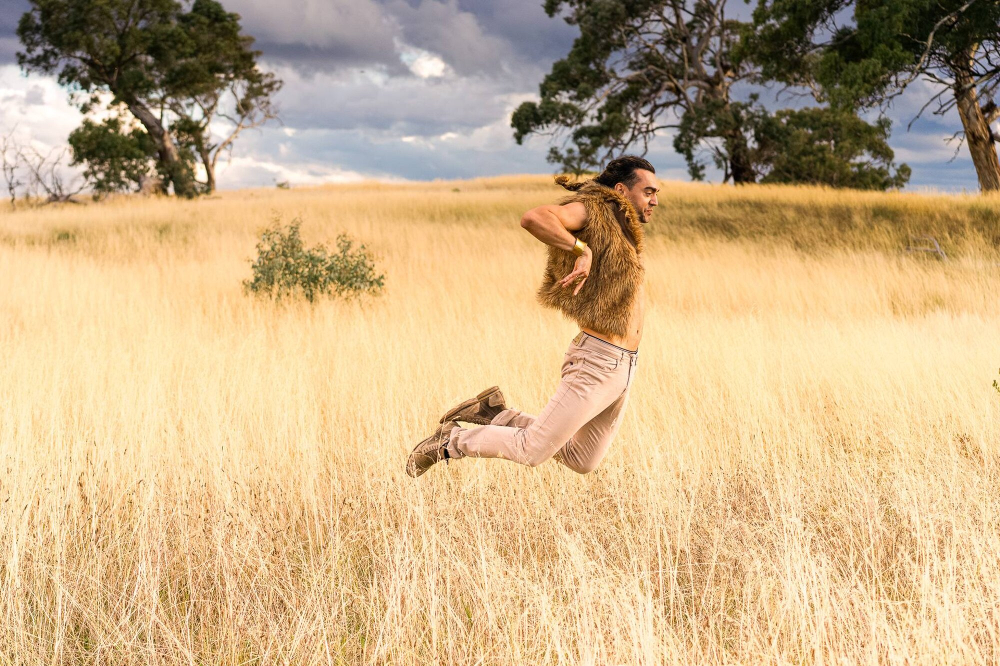

A pop single
Written from the finding the scientists choose. Their field recordings enter the track itself, as texture and as the starting points for rhythm and melody. Released afterwards, so the research keeps travelling once the festival closes.
Ars Biologica ArtXScience Residency 2027-28 · Dr WELI · working title Crystal Clear
For Ars Biologica I would make one artwork in three parts: a pop single, a music film shot in České Budějovice, and an installation. The concept is not decided, and that is deliberate. It comes out of the first conversation with the scientists. What follows is the method, and one worked example on a paper from the Centre, so you can see how I read research.
How I work with the science. I work with scientific content inside four artistic forms: songwriting, music production, video, and installation. The scientists are invited in at the level of material. I ask them for bioacoustic records, or any sound recording from their study systems, taken across the different subjects and spaces they work in, and for images or video showing the patterns, organisation and structures of the microbiological life they study. That material is the reference I design the song from and write the video script from.
Working title: Crystal Clear. It hands the work a material: crystal is glass, the slide and the lens the science is seen through. The title moves if the chosen finding does.
I am Dr Weliton Menario Costa, WELI. I am a scientist and an artist: a behavioural ecologist by training, and a creative director and innovator working on science in music and popular culture. My own PhD on kangaroo personality became a song and a film, and its reception is why I founded WildWooHoo, my science-to-art studio, and why I named and defined this practice as sci pop.
Four files. Nothing behind a login.
I am Dr WELI, a Brazilian scientist-artist in Sydney. I designed the experiments, collected the field data, ran the analysis and published it, then turned the same research into songs, films and installations. I make this work through WildWooHoo, my science-to-art studio, and I organise it under a genre I am naming sci pop, set out in a citable founding paper.
What distinguishes it is engagement. The form carries real science and opens participation at several levels at once: with the scientists while the concept is built, and with the community through dance, performance and immersion in the making, on social media and inside the installation at the festival.
Written from the finding the scientists choose. Their field recordings enter the track itself, as texture and as the starting points for rhythm and melody. Released afterwards, so the research keeps travelling once the festival closes.
Shot in České Budějovice with local performers, to music-industry standards, with no explanatory text on screen. I write and direct it, as I did for Kangaroo Time.
The scientists' fieldwork and material, then the choices that shaped the song and film, then a timed screening. Positioned sound, so walking changes what you hear.
One body of work, and where it has had to work
01 · The music film · 2023
My doctoral research on kangaroo personality, written and directed by me as a pop song and film, with a cast of twenty-four people from multicultural Canberra, none of them performers by trade. AAAS Dance Your PhD Overall Winner 2024. 238 or more media features across five continents.
02 · Live, university stage · ANU Three Minute Thesis 2024
The work performed rather than screened, in front of a research audience at the ANU 3MT competition. This is the half-time show, and it is what the 2027 public lab in Ceské Budějovice would look like at full scale.
03 · A scientific congress, in Portuguese · Encontro Anual de Etologia 2024
The Brazilian Ethology Society invited me to open its annual meeting, speaking on creativity in ethology. I wrote Cabra da Peste for it, from my Honours research on dominance hierarchy among female goats, with my Honours supervisor in the track. In Brazilian Portuguese cabra names the animal and also names a person of real toughness, so one phrase is literally true about the goats and literally true about the women the song addresses. The talk and the song were one commission.
04 · With children · schools program
The dance-science workshop. The same research turned into something a class can do with their bodies, which is the participation level I would bring to the 2027 lab for anyone who wants to try the movement.
05 · In public, no institution · Canberra Multicultural Festival
Out of the university entirely, in front of people who did not come for science. A residency outcome has to survive a screen, a stage, a congress, a classroom and a street. This one has.
The research, and the work made from it




